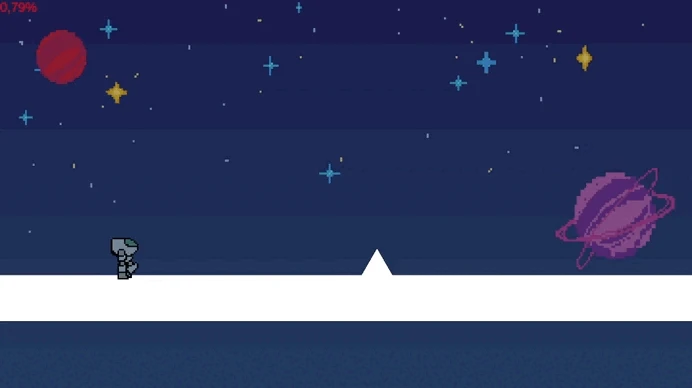

Detalhes do Projeto

Informação do Projeto
- Categoria: Game Development
- Engine: Unity / C#
- Contexto: Projeto de Treinamento
-
Links:

Visão Geral do Projeto
Portal Shift foi desenvolvido como parte do meu processo de treinamento e integração no Fellowship of the Game (FoG). O objetivo central do projeto não era criar um escopo massivo, mas sim solidificar os fundamentos da Unity, estruturação de código em C# e o entendimento profundo sobre o gerenciamento de componentes e GameObjects.
A mecânica central que construímos explora a modularidade dos controles. O jogo não possui um único código monolítico de movimento; em vez disso, implementamos um sistema onde diferentes scripts de movimentação são ativados e desativados dinamicamente. Conforme o jogador avança na fase e interage com áreas delimitadas, o sistema lê essas colisões e substitui o script atual do personagem, alterando fundamentalmente a forma como a física e os inputs respondem naquele cenário específico.
Principais Aspectos Técnicos
Movimentação Dinâmica
Implementação de múltiplos scripts de controle modulares, alterando a física e a resposta aos inputs do jogador em tempo real durante o gameplay.
Gerenciamento de Componentes
Prática de arquitetura limpa na Unity, manipulando as funções GetComponent e o ciclo de vida dos objetos (Enable/Disable) para trocar mecânicas sem destruir o objeto principal.